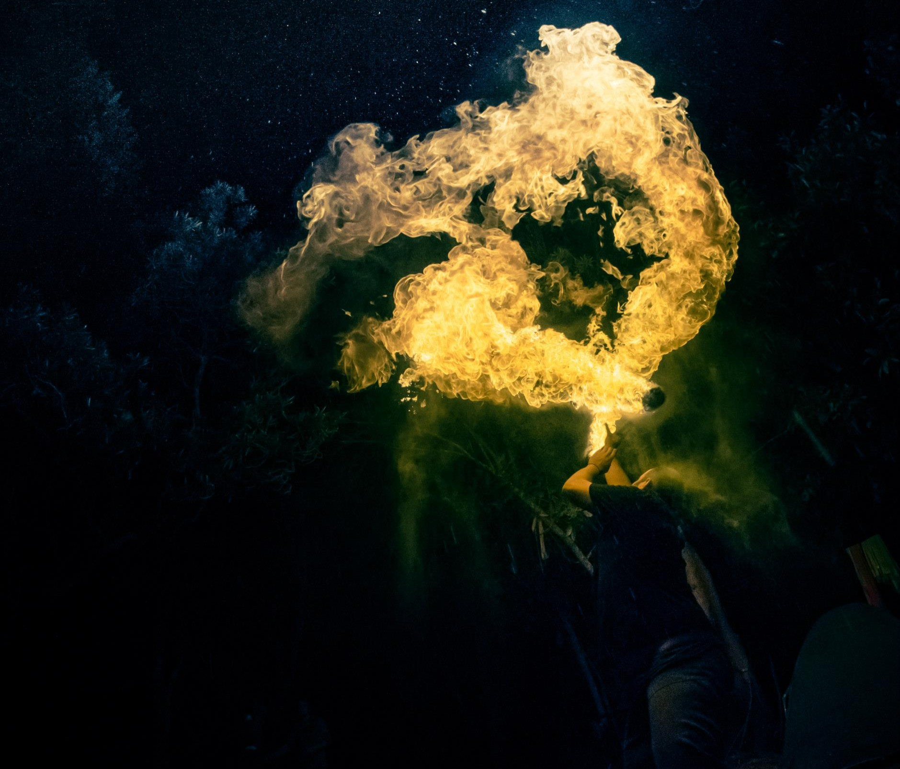

Animation mariage : spectacle de feu et prestations personnalisées
Et si votre mariage se terminait par un moment que vos invités n'oublieront pas ?
Le feu peut accompagner votre soirée de différentes façons : spectacle de feu,
jonglage enflammé, effets visuels, décors ou encore jets de scène.
Je propose des animations de mariage personnalisées, de la prestation ponctuelle
au spectacle complet, en fonction de vos envies et de votre budget.
Que vous souhaitiez créer un moment fort pour vos invités ou simplement apporter
une touche de magie à votre soirée, nous pouvons imaginer ensemble une prestation
qui s'intègre naturellement à votre mariage.
Le Spectacle Mariage Prestige
Pour faire du feu un véritable temps fort de votre mariage,
je recommande le Spectacle Mariage Prestige.
Un spectacle pensé spécialement pour les mariages, mêlant jonglage de feu,
effets visuels et pyrotechnie. Cœurs ou initiales enflammés, jets de scène,
effets de braises et final pyrotechnique peuvent composer la prestation.
La musique peut être choisie avec les mariés afin de créer un spectacle
qui leur ressemble et d'accompagner leur histoire.

Des animations de feu à la carte
Le Spectacle Signature peut également être une excellente solution pour profiter
d’un véritable spectacle de feu avec un budget plus maîtrisé.
Il est aussi possible de composer une animation à la carte, avec une prestation
de jonglage, des décors enflammés, des effets de feu ou encore des jets de scène,
proposés seuls ou combinés selon vos envies et votre budget.
Jonglage de feu
Massues, bâtons, bolas et autres agrès enflammés : une animation dynamique
et visuelle pour surprendre vos invités et apporter une véritable présence
artistique au feu.
Une prestation de jonglage de feu peut être proposée seule ou venir compléter
un autre moment de votre mariage.

Une allée de feu pour votre arrivée
Imaginez votre arrivée au milieu d'une succession de jets de scène,
illuminant votre passage sous les yeux de vos invités.
Les jets de scène peuvent accompagner l'entrée des mariés,
une ouverture de bal ou tout autre moment important de votre soirée,
afin de créer un instant fort et visuellement marquant.

Un feu d'artifice pour clôturer votre mariage
Pour terminer votre soirée en beauté, un feu d'artifice peut venir prolonger la magie du spectacle et offrir un véritable moment d'émerveillement à vos invités.
Selon le lieu et les possibilités offertes, il peut être intégré
à la prestation pour créer un final pyrotechnique à la hauteur
de votre mariage.

Des décors de feu pour vos photos
Le feu peut aussi devenir un véritable élément de décor.
Un cœur de feu, un cœur scintillant ou d'autres décors enflammés
peuvent être installés pour créer un espace original autour duquel
réaliser vos photos de mariage.
Ces installations peuvent également être pensées pour mettre en valeur
un moment particulier de la soirée et créer des souvenirs uniques.

Des effets pour votre moment à vous
Il est aussi possible de sélectionner quelques effets de feu pour ponctuer
votre mariage sans prévoir un spectacle complet.
Un effet au bon moment peut parfois suffire à transformer un instant
en souvenir marquant : arrivée des mariés, séance photo, ouverture de bal,
gâteau ou autre moment important de votre soirée.

Un spectacle qui vous ressemble
Votre mariage est unique. La prestation peut donc être adaptée à votre histoire,
à votre lieu de réception et à l'ambiance que vous souhaitez créer.
Vous pouvez choisir la musique, imaginer un effet particulier ou simplement
me faire part de vos envies. Nous construisons ensuite ensemble une formule
cohérente avec votre soirée et votre budget.
Que vous souhaitiez un grand spectacle, quelques effets de feu ou simplement
apporter une touche de magie à vos photos, je vous accompagne pour donner vie
à votre idée.
Une prestation préparée avec soin
Chaque prestation de feu est préparée en fonction du lieu et de ses contraintes.
Les installations et les effets sont choisis en conséquence afin de proposer
une animation adaptée aux conditions de votre mariage.
L'objectif : vous laisser profiter pleinement de votre soirée pendant que le feu
vient apporter sa part de magie.
Parlons de votre mariage
Vous avez une idée précise ou vous cherchez encore l'animation qui pourrait
faire la différence ?
Parlez-moi de votre projet, de votre lieu de réception et de votre budget.
Nous imaginerons ensemble la formule qui correspond à votre mariage.
Réponse personnalisée et devis gratuit.